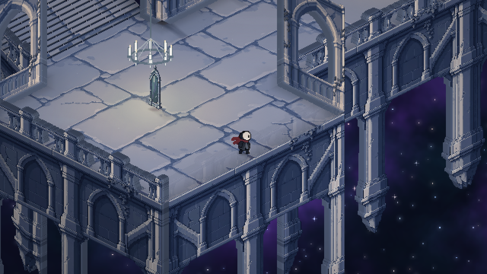

Zajrzyj za kolejne drzwi
Połączony pałac pełen rozwidleń, mrocznych zakamarków i przedmiotów prowadzących do zupełnie innych światów.

Niezależna gra pixel art · w rozwoju
Zagub się między gwiazdami. Odkryj sekrety cichego pałacu i zmierz się z tym, co czeka po drugiej stronie lustra.
Data premiery zostanie ogłoszona.
01 / WITAJ W PAŁACU
Biały kamień. Ciemne korytarze. Za oknem — kosmos. W StarMess każda kolejna sala skrywa coś, co nie do końca pasuje do reszty.
Przemierzaj połączone galerie, bibliotekę i kaplicę. Szukaj niezwykłych wejść do aren, ucz się rytmu przeciwników i przywracaj światło tam, gdzie wcześniej nie można było wejść.
Zajrzyj do środka ↗Połączony pałac pełen rozwidleń, mrocznych zakamarków i przedmiotów prowadzących do zupełnie innych światów.
Ośmiu bossów, własne rytmy ataków i dwie fazy walki. Obserwuj, unikaj i znajdź swój moment.
Odblokuj lokalny co-op na arenach. Dwa poziomy trudności i pełna obsługa pada pozwolą znaleźć własne tempo.
02 / POCZTÓWKI Z KOSMOSU
Kadry z prototypu. Gra i jej oprawa stale się rozwijają.
03 / PO DRUGIEJ STRONIE EKRANU
Małe zwycięstwa, wielkie porażki i momenty z tworzenia StarMess.
Odtwarzacze TikToka ładujemy dopiero po Twoim kliknięciu. Wtedy TikTok otrzymuje dane połączenia i może używać cookies.
04 / GRA ROŚNIE
Kolejne wersje, nowe miejsca i poprawki. Tutaj znajdziesz historię zmian gry.
W KOSMOSIE RAŹNIEJ RAZEM
Pogadaj o grze, pokaż swoje podejście do bossa i zobacz, co powstaje za kulisami.
Dołącz do DiscordaTWOJA PODRÓŻ JESZCZE PRZED TOBĄ
Strona Steam jest w przygotowaniu. Link pojawi się tutaj.